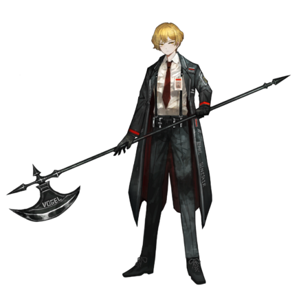

人物介绍
辛克莱是LC-B（即边狱公司B队）的一位罪人，编号为11
特质：怯弱，过度依赖他人，缺乏安全感
即使考虑到该罪人处于不稳定的成长阶段，其与人交谈时仍常常紧皱眉头或表现出过度的惊讶。由于其尚不习惯战斗，因此最初可能甚至连内脏都不敢直视。鉴于罪人中不乏具有暴力倾向的人，因此我们建议经理在对待他时以鼓励为主，而不是惩罚。该罪人有时会释放杀气，尽管其本人并不自觉，但我司认为这表明其在我司业务范围内很有潜力。只要给予适当的刺激，我们相信他会有长足的成长。
相关考据
辛克莱出自由德国/瑞士-赫尔曼·卡尔·黑塞所著的小说《德米安：埃米尔·辛克莱的彷徨少年时》
- 德米安：德米安是原著中辛克莱的导师，在青年时辛克莱曾对其憎恶，因为他改变了辛克莱的人生。但在成熟后，他逐渐向德米安靠拢，逐渐成为德米安。
- 克罗莫：在原著中克罗莫并没有做出如此大的罪行，也没有“净化”（杀死）掉辛克莱的全家，但也要挟住了辛克莱，在原著中辛克莱偷的是钱，月计世界观中偷的是地下室钥匙。克罗莫也是带辛克莱进入“另一个世界”的罪魁祸首之一。但是在德米安的“劝说”下，克罗莫后来再也没有找过辛克莱。（看见就绕着走）
- 印记：辛克莱，德米安和艾娃夫人的头上都有这个印记，在N公司准执柄者辛克莱和德米安上印记甚至直接显现了出来。这个印记是该隐的印记。该隐在圣经中因为谋害自己的弟弟亚伯被上帝打上了一个印记，在圣经中，他是一个罪人。但德米安有对此的不同想法（在原文中：“事实可能是该隐比较难以捉摸，同时又比他人有胆量和魄力，让人敬畏。这可能才是他‘印记’的秘密……如果你问人们为什么不把他杀死，他们不会说‘我们是懦夫’，而是会说：‘我们不能，因为他有上帝的印记’。谎言可能就是这样产生的。”）。这该隐的印记也贯穿了全文。对于这个印记，不同的人有不同的解读，可以自行上网查找。